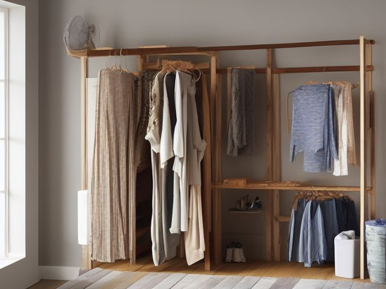

Laundry Room micro zone
The Hanging and Air-Dry Zone
Dry the few things a hot drum would ruin, and get them off the rack the moment they are dry.
One session: 15-30 min. most of it deciding what truly cannot go in the drum

What done looks like
The rack folded flat against the wall with dry bars, its drip tray wiped out and empty, the rail holding six spare hangers, and nothing hanging that was washed before today.
The six passes, in order
Work them in this order. Sorting after you have arranged things means arranging things you were about to remove.
Sort
Decide what stays. Everything else leaves the zone now.
Strip the rack completely. Anything still damp goes back on, anything dry goes to its drawer right now, and the wool jumper that has been draped over the end rung since spring either goes away properly or leaves the house.
Straighten
Give what stays a home, placed where the hand actually reaches.
The rack gets one spot with a drip tray underneath, not wherever the last load abandoned it. Hang bras, wool and swimwear on the top rungs where air actually moves, and keep the bottom rungs for flat items that can take the slower dry.
Shine
Clean it, and use the cleaning to inspect what you cannot see when it is full.
A rack that is stored damp grows a musty smell and passes it straight to the next load hung on it. Wipe the bars dry when you strip it, and fold it flat so both faces get air rather than pressing wet metal against wet metal.
Safety
Make the zone safe for everybody who uses it, including the shortest person.
Water on a hard floor under a drying rack is a slip you take in socks with an armful of laundry. Keep the drip tray in place, and never stand the rack where drips can reach a wall outlet or a plugged in extension lead running along the skirting.
Standardize
Write down the best way you know today, so it survives you forgetting.
The rack is either in use holding one set of damp items, or folded flat against the wall. Nothing has permanent residence on the rungs, and no garment starts a second night up there without a reason you could say out loud.
Sustain
Attach the reset to something that already happens, so it keeps itself.
Before you open the washer to start the next load, you clear the rack. Anything dry comes off first, which means the rack is always ready for the load you are about to run.
The garment that only ever hangs
There is at least one thing on that rack you have washed more times than you have worn. It is hand wash only, it takes two days to give up its water, and it holds the rack hostage the entire time while everything else waits its turn. The rule: think back to the last three times it was washed and name the occasion you wore it for each one. If you cannot name all three, the garment is charging you rack space and drying days it has not earned, and it goes. Line dry only is a real running cost, not a neutral care label, and it should only ever be paid for clothes you genuinely reach for.
Check these before you start
- Water and electricityA drying rack standing over a wall outlet or across an extension lead, with garments dripping onto the floor beneath them.
- FallThe wet patch under the rack on a hard laundry floor, walked over in socks by someone carrying a basket they cannot see past.
Cleaning it properly
A rack put away damp grows a musty smell and hands it straight to the next load hung on it. Wipe the bars dry, empty the tray, and fold it flat so both faces get air.
Inspect as you clean. Cleaning is the only time you see the zone empty, so use it.
- Rust blooming at the rack's joints and folding pivots, where water pools and never fully dries. Flag it.
- Black mould speckling the tray corners, or a bar that still smells musty after you have wiped it. Note it.
- A hinge or lock gone loose, or a bar that no longer holds its angle when you set it. Flag it.
- A water stain spreading on the wall or skirting behind the rack. Note it.
The standard that keeps it fixed
The rack is in use or folded flat, never left standing half loaded.
Reset trigger. when you open the washer to start the next load
Next in this room
- The Folding Surface, the zone before this one
- The Utility and Cleaning Zone, the zone after this one
- All 6 micro zones in the Laundry Room
Related reading
- What is 6S?
- This zone's safety pass, in full
- Is one spot in this zone always the one you skip?
- Why this zone gets messy again
- Decluttering vs. organizing
- Before you buy storage for this zone
- Still does not fit, even after the honest count?
- Does something in this zone actually get used somewhere else?
- Stuck on one item in this zone?
- Written the standard, but nobody else follows it?
- Does everyone in the house agree what "done" looks like here?
- Does more than one person use this zone?
- Found a duplicate of something in this zone?
- Why the standard above names one home per category
- Is the everyday item in this zone actually the easy one to reach?
- Not sure whether to keep something in this zone?
- Does this zone keep running out of something?
- Started this zone and stalled partway through?
When you want it off the screen
Carry The Hanging and Air-Dry Zone into the room
The method above is complete and free. The Whole House Print Pack puts The Hanging and Air-Dry Zone and the other 113 micro zones on 684 printable cards, so the steps you just read are not stuck behind a phone screen while your hands are full.
The Print Pack, 19 dollarsOr draw a card free
If The Hanging and Air-Dry Zone keeps fighting back, the real problem usually sits somewhere else in the room. A one hour virtual consult is 250 dollars: we find the function, the friction and the root cause together, and you keep a written standard for the space. See what a consult covers.